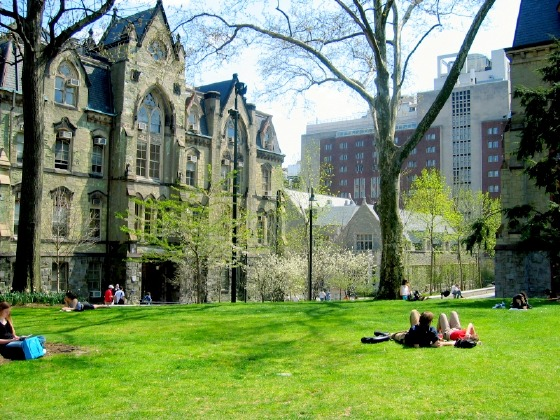

The University of Pennsylvania is a school located in Philadelphia, Pennsylvania, founded in 1740 by Benjamin Franklin. Its is setting is urban and its campus size is 302 acres. UPenn utilizes a semester-based academic calendar and has a student-faculty ratio of 6:1 with 68.3% of its classes having fewer than 20 students. The top five majors at UPenn are business, social sciences, engineering, biological and biomedical sciences, and history. The University of Pennsylvania is known for its Wharton School of Business, which boasts the top undergraduate business program in the country and is consistently ranked as one of the best business schools in America. UPenn has an active Greek life with over fifty Greek letter organizations. The UPenn mascot is a Quaker. Notable alumni include Elizabeth Banks, Donald Trump, and John Legend.
